Patios & PavingCreate space to sit, dine and unwind
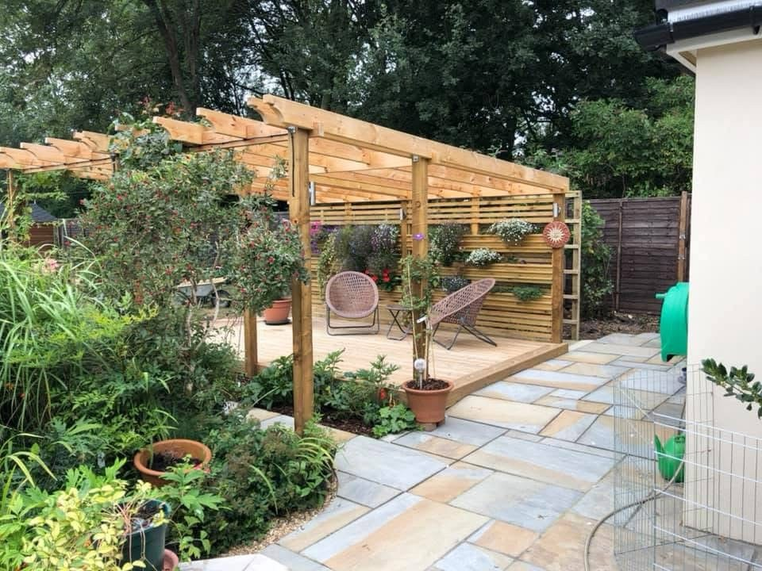
ALRESFORD, HAMPSHIRE · CONCEPT / CONSTRUCT / CREATE
A quieter place.
A garden of your own.
Thoughtful landscape construction, from beautifully detailed paving to timber structures and places to sit. Quiet Earth helps bring your ideas to life, one garden at a time.
Landscape ConstructionPaving & Timber StructuresBased in Alresford
Decking & SeatingCreate a place to relax outdoors
Timber StructuresPergolas, sheds & summer houses
Fencing & BoundariesDefine your garden with care
OUTDOOR SPACES MADE FOR LIVING
A little inspiration.
A whole new garden.
Based in Alresford, Hampshire, Quiet Earth specialises in landscape construction. From a small paving project to a garden with decking, seating and timber structures, speak with Jon about what you have in mind and how you want to use your outdoor space.
Request a quote →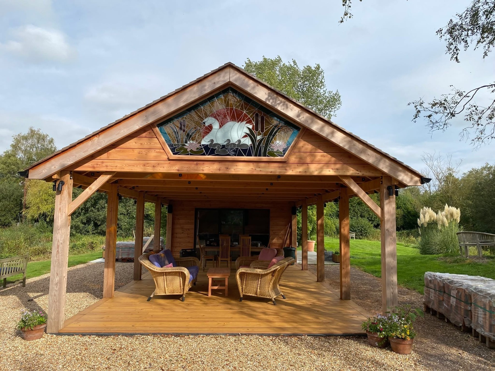
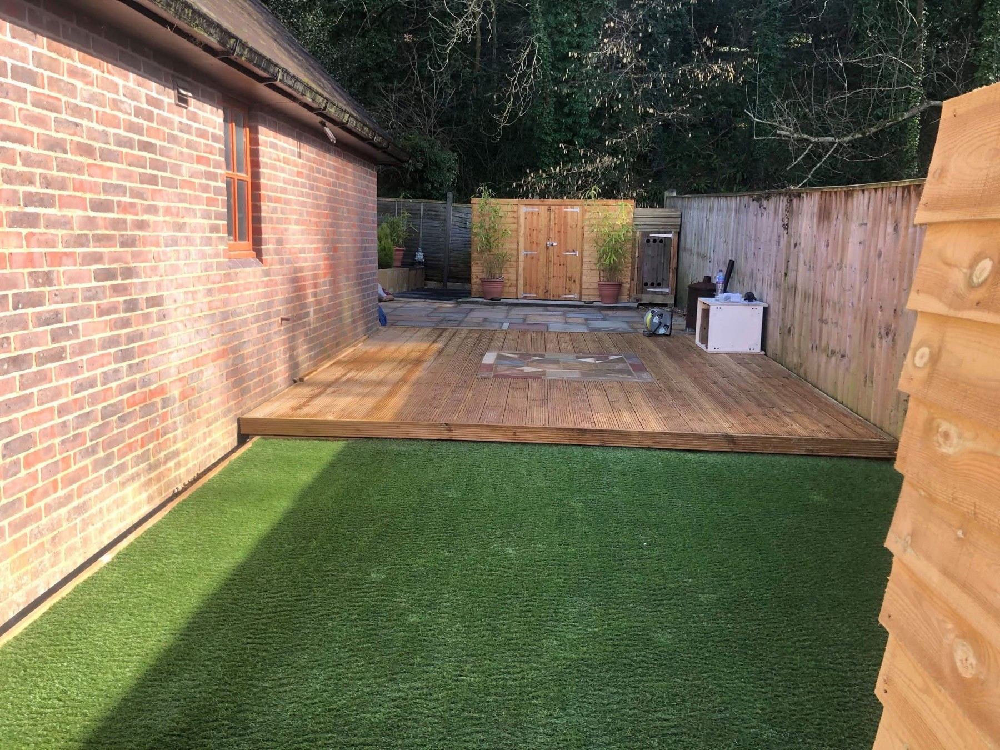
TIMBER STRUCTURES & OUTDOOR LIVING
Built for the garden.
Made for everyday life.
Create a place to gather, unwind or enjoy a little shelter. Ask about timber frame structures, pergolas, decking and outdoor seating, as well as the installation of sheds and summer houses.
Discuss your project →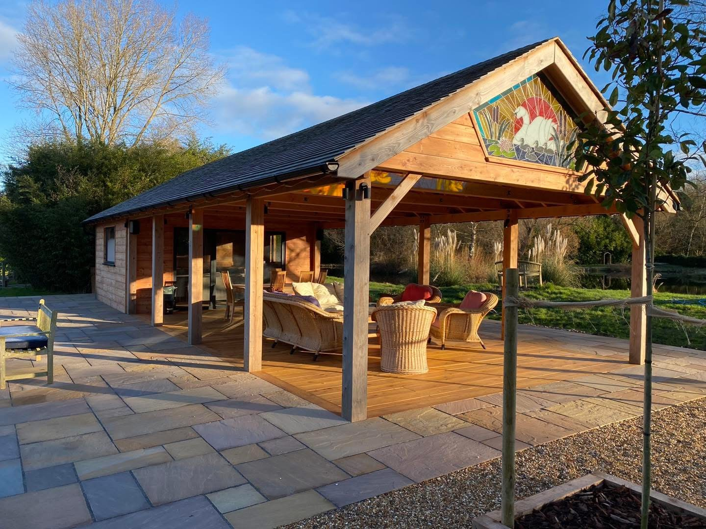
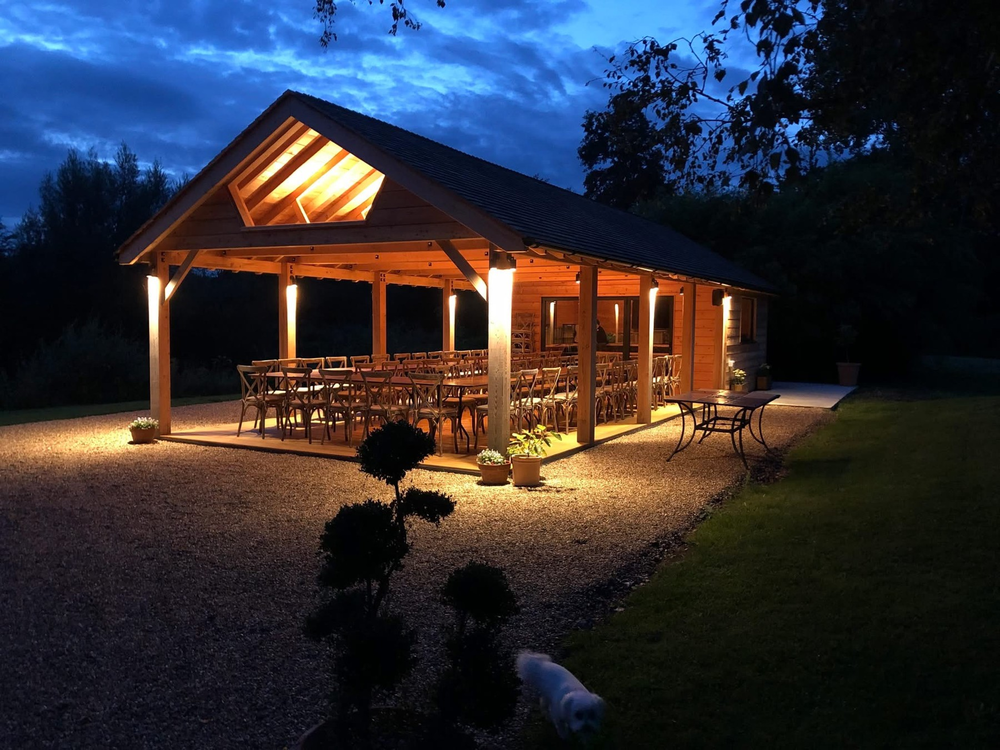
PROPERTY GALLERY
A closer look at our gardens.
Patios, paving, lawns and finishing details from Quiet Earth Landscape’ supplied project photographs. Open any image for the full view.
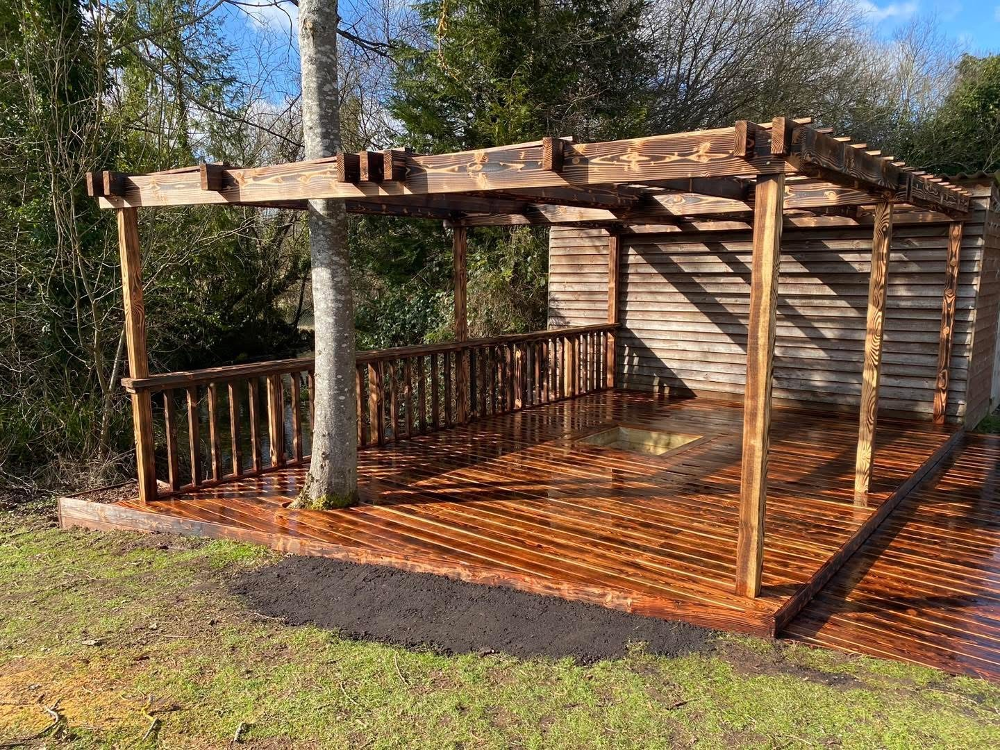
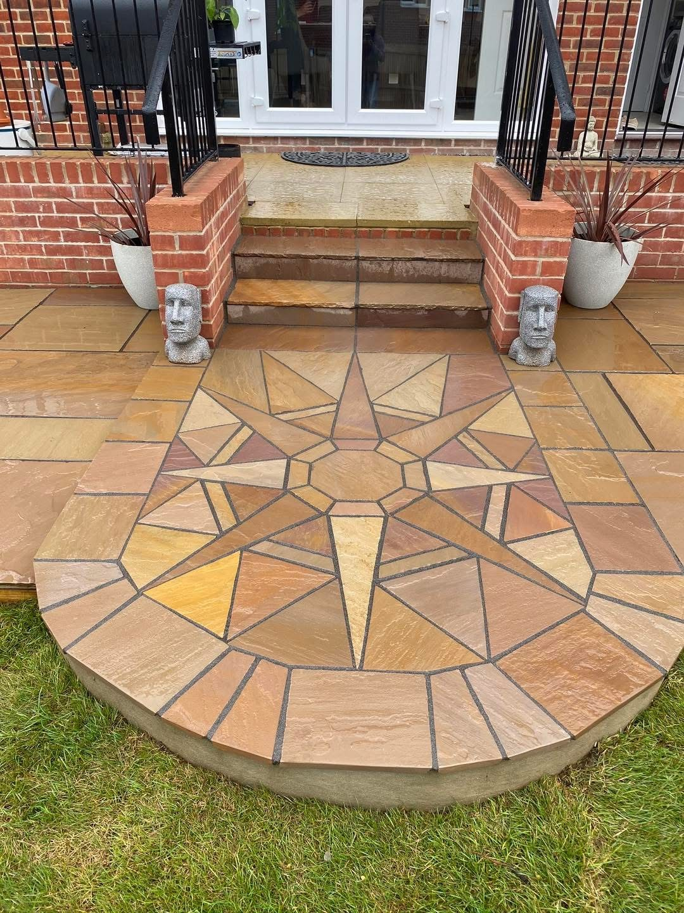
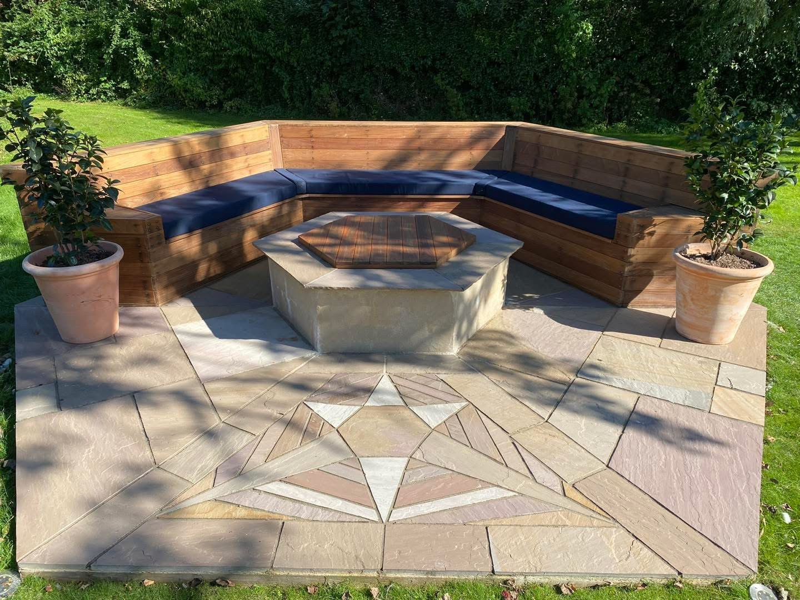
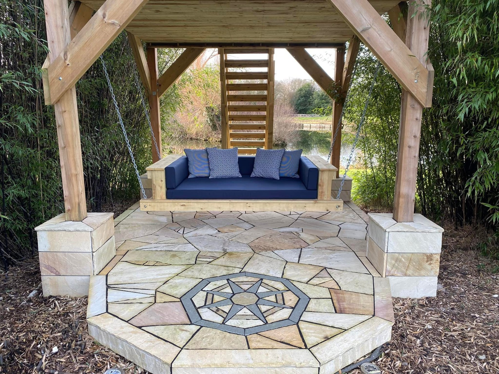
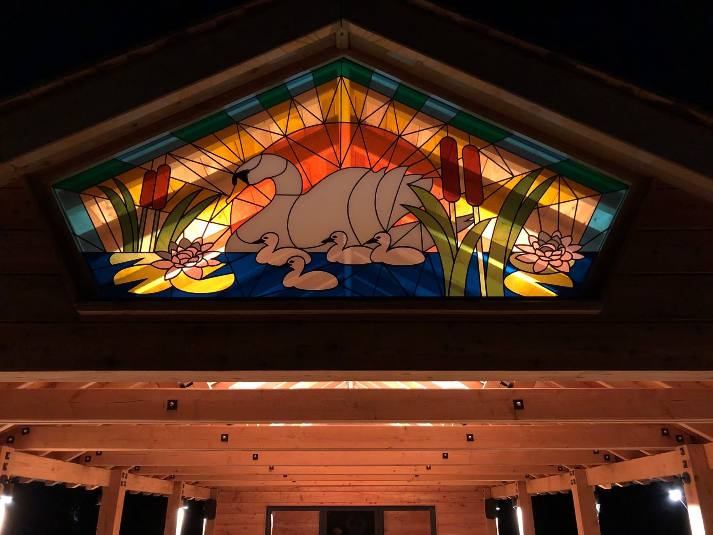
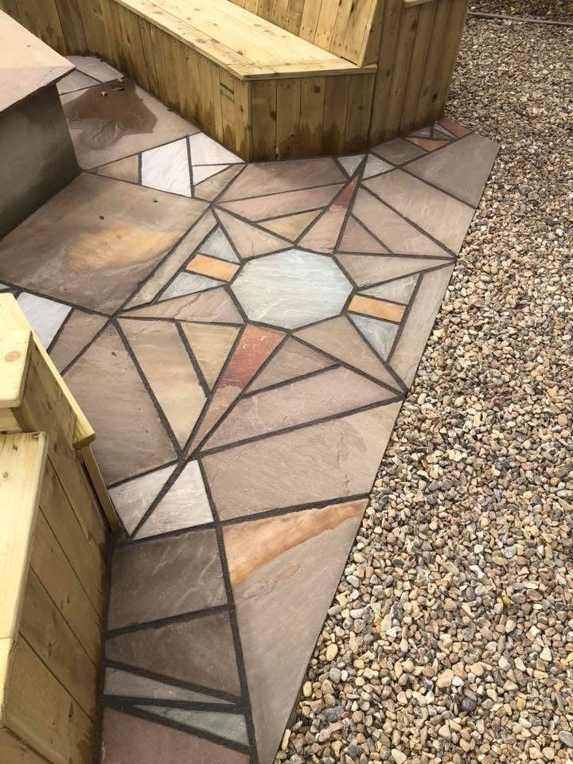
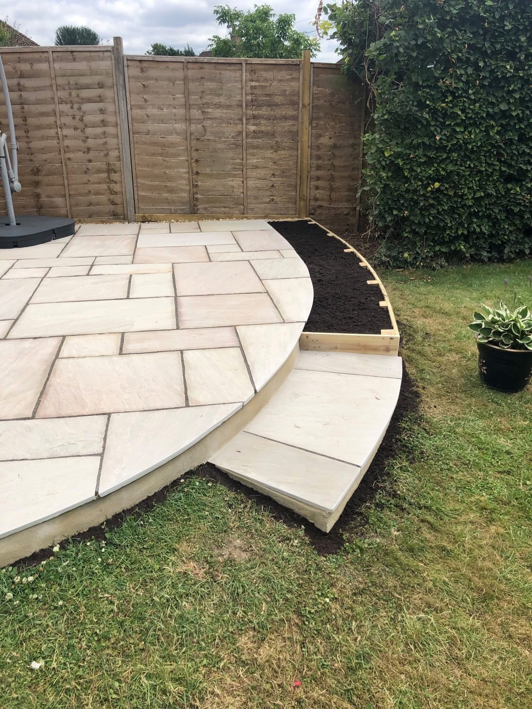
PAVING & FINISHING DETAILS
A thoughtful layout.
A personal finish.
Curves, steps and decorative paving can give a garden its own character. Explore these finished project photographs and discuss the layout and materials you would like for your space.
Discuss your project →QUIET EARTH LANDSCAPE
It starts with
your ideas.
Quiet Earth is based in Alresford, Hampshire. Jon works on landscape construction projects large and small, helping turn ideas into practical outdoor spaces. Contact him with your postcode to discuss your plans and availability.
01
Speak directly with Jon
Based in Alresford, Hampshire. Send your postcode and project details to begin.
02
Landscape construction
Paving, decking, outdoor seating, timber structures, fencing and pergolas.
03
Recommended by customers
Our supplied Facebook profile shows 100% recommend from 7 reviews.
REQUEST A QUOTE
Tell us about
your space.
Tell us about your garden, your postcode and the changes you have in mind. This form opens WhatsApp with your enquiry ready for you to send.
QUIET EARTH LANDSCAPE
Let’s make more of your garden.
Speak with Jon: 07977 628262
quietearthlandscape@gmail.com